鍼灸、整骨、接骨、美容鍼灸、マッサージ、整体、小顔矯正、ぎっくり腰、O脚矯正、不妊、エステ、交通事故でお困りの方はTeaching Beauty鍼灸整骨院へ。
電話でのご予約・お問い合わせはTEL.03-6413-7803
〒154-0014 東京都世田谷区新町3-21-１ さくらウェルガーデン301
施術内容MENU
【施術内容・料金】
【疾患施術】
◇初診料
◇鍼灸施術、カッピング療法
♢出張施術
◇前置胎盤・低置胎盤
◇突発性難聴
◇メニエール病
◇急性低音障害型感音難聴
◇耳管開放症、耳管狭窄症
◇耳鳴り、耳閉塞感
◇骨盤矯正・姿勢矯正・猫背矯正（整体）
◇不妊症
◇男性不妊症 [乏精子症、無精子症、ED治療（勃起不全）]
◇多嚢胞性卵巣症候群
◇逆子・つわり
◇脱毛症、薄毛、育毛、白髪、増毛
◇過敏性腸症候群(IBS)
◇眼科疾患
◇花粉症
◇産前・産後骨盤矯正
◇交通事故・むちうち・自賠責保険
◇推拿療法（マッサージ・按摩・指圧）
◇その他
【美容施術】
◇初診料
♢出張施術
◇ダイエット鍼
◇美容鍼（美顔鍼） ※クレオパトラ、ブライダル
◇小顔矯正
◇小顔リフトアップ
◇美脚矯正・O脚矯正
◇骨盤矯正・姿勢矯正・猫背矯正（整体）
◇脱毛症、薄毛、育毛、白髪、増毛
◇エステ
【疾患施術】
◇初診料
◇鍼灸施術、カッピング療法
♢出張施術
◇前置胎盤・低置胎盤
◇突発性難聴
◇メニエール病
◇急性低音障害型感音難聴
◇耳管開放症、耳管狭窄症
◇耳鳴り、耳閉塞感
◇骨盤矯正・姿勢矯正・猫背矯正（整体）
◇不妊症
◇男性不妊症 [乏精子症、無精子症、ED治療（勃起不全）]
◇多嚢胞性卵巣症候群
◇逆子・つわり
◇脱毛症、薄毛、育毛、白髪、増毛
◇過敏性腸症候群(IBS)
◇眼科疾患
◇花粉症
◇産前・産後骨盤矯正
◇交通事故・むちうち・自賠責保険
◇推拿療法（マッサージ・按摩・指圧）
◇その他
【美容施術】
◇初診料
♢出張施術
◇ダイエット鍼
◇美容鍼（美顔鍼） ※クレオパトラ、ブライダル
◇小顔矯正
◇小顔リフトアップ
◇美脚矯正・O脚矯正
◇骨盤矯正・姿勢矯正・猫背矯正（整体）
◇脱毛症、薄毛、育毛、白髪、増毛
◇エステ
初診料
￥3,000（税抜）
▶お問い合わせ
【施術メニューに戻る】
無料相談：03-6413-7803
▶お問い合わせ
【施術メニューに戻る】
▶お問い合わせ
【治療メニューに戻る】
￥45,000（税抜）／￥90,000（税抜）／￥135,000（税抜）
・疲れきっていて癒しのマッサージを受けたい
・マッサージを受けながら寝たい
・骨格の歪みに対するマッサージを受けたい
・究極の癒しを受けたい
・内から美しくなりたい
・マッサージが好き
・どこのマッサージ院に行ってもすぐ元に戻る
・鍼も整体も恐い
少しでも美容マッサージに興味があるのようでしたら、まずは電話やﾒｰﾙにて無料相談をご利用下さい。
TEL:03-6413-7803
▶お問い合わせ
【治療メニューに戻る】
- 病院に行くと3分しか問診をしてもらえない。パソコンばかり見ていてこちらを見ようともしない。先生が質問するだけで言いたい事が言えなかった。
と言うことはありませんか？ 当院は患者様の話を良く聞き説明をし、納得頂いてから施術に入ります。納得頂けない場合は施術を行いません。
もちろん、料金も頂きません。 問診をしっかりし、お話を聞いてから、
色々な機材を使って検査をしていきます。
その後、お腹、舌、脈、皮膚、目、爪を診て患者様の病の原因を探ります。
最後に、患者様の骨格の状態を見て、痛みが出る原因が姿勢にないかを調べます。
例えば、腰が痛い原因は、10年前に足首を捻挫した事や手術の傷痕、が原因の場合もあります。
そのため、細かく検査し、どこが原因で痛みが出ているかを調べる必要があります。 病院での問診は3分かもしれませんが、当院は60～90分かけて患者様の病気の原因を探ります。
※最終来院日から6ヶ月空くと初診料が発生いたします。
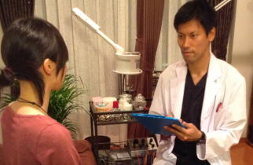
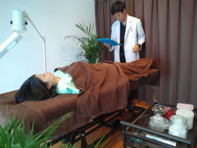
▶お問い合わせ
【施術メニューに戻る】
鍼灸施術＋カッピング療法
- 鍼灸施術 1回 ￥45,000（税抜）
四十肩・五十肩・腰痛の施術は他鍼灸院と歴然の差があります。
個人差はありますが、1回の施術で痛くて全く挙がらなかった肩が挙がる事も良くあります。ぎっくり腰は全く動けなかった方が1回の施術でも動けるようになり仕事に行けるようになります。
当院の施術費が高いのには理由があります。
すべての資格を取得するのに10年間学校に通う必要があります。
また、鍼灸師教員として各学校の国家試験合格率100％に導きました。
現場では数々の芸能人やスポーツ選手を施術してまいりました。
鍼が苦手の患者様やお子様の施術には刺さない鍼を用いて施術いたします。刺さない鍼はツボ押し棒で押しているような感覚のものです。
【鍼灸施術がお勧めの方】
・四十肩、五十肩
・ぎっくり腰、腰椎椎間板ヘルニア、脊柱管狭窄症
・頭痛を治したい
・寝違え
・首が痛い方、頸椎ヘルニア
・冷え症を治したい
・扁桃腺炎（解熱、喉の痛み改善）
・生理不順、生理痛を緩和したい
・自律神経失調症がある方
・更年期の症状がある、不眠症のある方
・膠原病を治したい
・鋭い痛みがある
・体質改善をしたい、癌を予防したい方
・病院に通ったけど、原因が良くわからない
・風邪、インフルエンザ
・その他の治療内容はこちらへ
▶鍼灸施術にご不安があるようでしたら、Q&Aをご参照下さい。
- カッピング療法
鍼灸施術のオプションとして必要な場合にのみ無料で行います
カッピング療法は全身の血行を改善させることができるため、病気の改善、病気の予防効果があるとされ、最近では海外のハリウッドスターが毒抜きと言ってセレブの間で注目を集めている最新の施術法になります。
様々な病気の原因になるのが、局所の虚血が原因です。
そのため、健康とは60兆個の細胞の1つ1つにより良い血液を届けることが健康とされています。カッピング療法では、毛細血管の再生を促し細胞の1つ1つにより良い血液を供給することができます。
カッピング療法は病気の施術にも用いれますが、病気の予防効果があるのも特徴の一つとなっております。
また、カッピングは血行の流れが悪い個所に黒みが出るため、どこが悪いか見てわかるので診断としてもカッピングを用いることができます。
色の出方も人によって様々で、その色によって内臓の状態が悪いのか判断できるものとなっております。
また、世界ではマドンナ、レディーガガ、ジャスティンビーバー、デビットベッカム、マイケルフェルプスなどがカッピング療法を行っていると言われています。
【カッピング療法の効果】
1.血液循環アップ
2.皮膚の新陳代謝を上げ皮膚の若さを保つ
3.関節の動きを円滑にする
4.自立神経や各種神経疾患の調節を行う
5.内臓を活発にする
6.病気の予防効果
無料相談：03-6413-7803
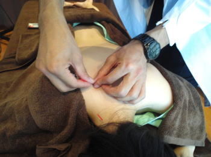
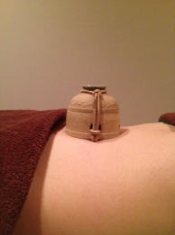
▶お問い合わせ
【施術メニューに戻る】
鼻疾患（慢性上咽頭炎、花粉症、蓄膿症、アレルギー性鼻炎など）
1回 ￥45,000（税抜）
【次のような方にお勧めです】
・鼻づまり、鼻水、目の痒みが辛い
・1年中・鼻づまり、目の充血、痒みがある
・外の出るとくしゃみが止まらない
・マスクやゴーグルが手放せない
・薬は飲んでいるけど、あまり効果が無い
・薬をあまり飲みたくない
・慢性上咽頭炎がある
・副鼻腔炎がある
・蓄膿症がある
・アレルギー性鼻炎がある
花粉症でお困りのようでしたら、まずは電話やﾒｰﾙにて無料相談をご利用下さい。
▶つづきを読む
TEL:03-6413-7803
▶動画 『1日3分で花粉症を抑える簡単ツボ押し』
▶お問い合わせ
【治療メニューに戻る】
- 花粉症は免疫の過剰反応によって起こるものです。
当院の花粉症施術は痛くない鍼と熱くないお灸を用いての施術になります。
初回から劇的に改善する方も沢山いらしゃいます。
花粉症施術は12回となります。
多くの患者様が3シーズン施術をすることによりほぼ花粉症の症状がでなくなっております。
今年、施術する事により完治する方、来年は症状が出なくなる方、症状が緩和する方など個人差はありますが、１回目の施術から効果は感じられます。
春の気持ち良い時期を快適に過ごせるように、今から花粉症を治していきましょう。 一生、花粉症で悩まされたくないですよね？？
花粉症以外のその他、鼻疾患は施術回数も少なくすみます。
【次のような方にお勧めです】
・鼻づまり、鼻水、目の痒みが辛い
・1年中・鼻づまり、目の充血、痒みがある
・外の出るとくしゃみが止まらない
・マスクやゴーグルが手放せない
・薬は飲んでいるけど、あまり効果が無い
・薬をあまり飲みたくない
・慢性上咽頭炎がある
・副鼻腔炎がある
・蓄膿症がある
・アレルギー性鼻炎がある
花粉症でお困りのようでしたら、まずは電話やﾒｰﾙにて無料相談をご利用下さい。
▶つづきを読む
TEL:03-6413-7803
▶動画 『1日3分で花粉症を抑える簡単ツボ押し』
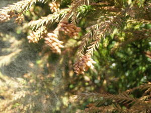
▶お問い合わせ
【治療メニューに戻る】
ダイエット鍼
1回 ￥45,000（税抜）
- 10~20キロ減も夢じゃない。数々のダイエット法を試した方も必見。
当院の院長がNHKでも紹介した痩せる方法をお教えします。
当サロンのダイエット鍼により代謝を上げ、脂肪を燃焼しやすい体を作ります。
ダイエット鍼は当院のオリジナルの手法になりますので他では受けることができません。
鍼灸施術、運動療法、電気療法、生活指導、食事指導により目標体重を目指します。
【ダイエット鍼がお勧めの方】
・痩せたい方
・なかなか痩せにくい方
・様々なダイエット法を試した方
・基礎代謝率を上げたい方
・腹筋を付けたい方
・モデルさんの様な体形になりたい方
・腹筋がなくご飯を食べるとぽっこりお腹がでる方
・生理痛がひどい方
・ダイエットの運動指導、食事管理指導を受けたい方
・筋肉をつけて健康な美しい身体になりたい方
※毎回6~15分間の運動療法を行いますので、痩せたい意志の強い方のみお引き受けいたします。
少しでもダイエット鍼に興味があるようでしたら、まずは電話やﾒｰﾙにて無料相談をご利用下さい。
無料相談：03-6413-7803
▶動画『ダイエットに効くのツボ押し』
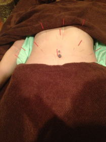
▶お問い合わせ
【施術メニューに戻る】
美容鍼（美顔鍼）
クレオパトラ美容鍼（美顔鍼）
1回 ￥45,000（税抜）
1回 ￥45,000（税抜）
- 女性はいくつになっても”綺麗だね”と言われたい。 男性はいくつになっても
”カッコイイ”と言われたい。モテたい。 その願いを当院が叶えます。
芸能人やモデルさんは基がいいのもありますが、メンテナンスをしっかりしているから、いくつまでも綺麗なのです。「当院の目標は10歳若く見せる」をテーマとしております。 いくつからでも、遅くありません。
今から始めましょう。 当院の患者様で80代で通われている方もいます。
実年齢より見た目年齢が若く美しいと色々と得をしますよ。
美容鍼を重ねるごとに、ほうれい線が薄くなり、肌ツヤが改善されます。
また、この施術はお顔に通常よりも多くの鍼を打ち1～2カ月効果を持続することができる施術メニューになります。
通常の美容鍼よりもお肌のもちもち感が異なります。また、ほうれい線に強い折り目が入っている方はこちらのメニューをおススメいたします。
通常の美容鍼の4倍の鍼を使って施術を行っていくため、なかなか通えない。一気に効果を出したいという方はこちらを選ばれてください。
当院の院長はクレオパトラ美容鍼創設者であり、数々の鍼灸学校で指導し、美容鍼のセミナーは常に満杯の実力があるため、他の鍼灸院の美容鍼とは格段の違いがあります。美容鍼を受けた事がある方も当院の美容鍼は効果が全く異なるものとなります。
お顔でお悩みの方は是非一度、本物の美容鍼を体験してみて下さい。
【クレオパトラ美容鍼がお勧めの方】
・若く見られたい
・ほうれい線を消したい
・しみを薄くしたい
・艶肌を手に入れたい
・肌質を変えたい
・目の下のくまを消したい
・リフトアップしたい
・眉間のしわを消したい
・額のしわを消したい
・口元のしわを消したい
・髪の毛のハリを戻したい
・薄毛を治したい
・白髪を少なくしたい
- ブライダル美容鍼（美顔鍼）
1回 ￥45,000（税抜）
結婚式を控えた患者様におススメのコースになります。
やはり、一生に一度の結婚式では綺麗に写真に納まりたいものです。
少しでも綺麗になりたいと思うのが女心というもの。
エステに行って綺麗にするのではなく、実際にお顔に鍼を打つことにによって肌質、顔の浮腫みなど大きく異なってきます。実際にお顔の中に鍼を打つことによりお顔のコラーゲンの再生がすぐに行われ触った感じや見た目がすぐに変わってしまいます。
3~6ヵ月前からの施術をおススメしております。
また、結婚式の2週間前までの施術となります。
少しでもクレオパトラ美容鍼(美顔鍼）ブライダル鍼に興味があるのようでしたら、まずは電話やﾒｰﾙにて無料相談をご利用下さい。
▶つづきを読む
無料相談：03-6413-7803
▶美容鍼灸をご希望の方はQ&Aを必ずご参照下さい。
▶動画『お肌を10代の肌に蘇らせる簡単ツボ押し』
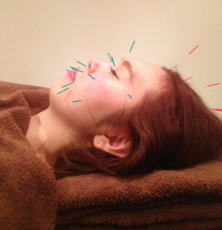
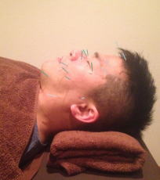
▶お問い合わせ
【施術メニューに戻る】
ソリッド小顔矯正
1回 ￥45,000（税抜）
【ソリッド小顔矯正がお勧めの方】
・顔を小さくしたい
・顔が丸顔である
・顔がむくみやすい
・写真を撮ると左右非対称である
・鏡を見ると左右に違いがある
・「右の顔より左側の顔が好き」など左右に違いがある
・顎関節症がある
・首肩コリがある
・頭痛がある
少しでも小顔矯正に興味があるのようでしたら、まずは電話やﾒｰﾙにて無料相談をご利用下さい。
無料相談：03-6413-7803
▶動画『驚くほど簡単に小顔になる秘密の方法』
▶動画『一瞬で小顔になる秘密の方法』
▶お問い合わせ
【治療メニューに戻る】
- 「よく患者様から痛くないですか？」と質問されますが、当院の小顔矯正は痛みなく行えます。また、小顔矯正をすることにより、「顔が半分になっちゃた」と表現する患者様もいらっしゃる程です。 当院の施術は骨のズレを取り除き適切な位置に骨を戻すことにより、リンパの流れをよくして小顔を手に入れます。顔がズレたままにしていると、しわになりやすく、しみや
たるみの原因になります。 小顔矯正は当院に通われているモデル様方に人気のコースとなっております。
いくら高い美容液を使っても骨がズレていては全く意味がありません。
人間はシンメトリー（左右対称） の物を美しいと感じ、アシュメトリー（非対称）の物を美しくないと考えるように脳がなっております。
そのため、お顔を左右対称にしておくことこそが美しい顔を維持することに繋がりなります。最近では、姿勢の悪化のため、モデルさん、芸能人などでも顔が歪んでいる方が多く見受けられます。
顔のバランスが左右非対称の方も一般の方から見たら、左右の非対称に気づくことはありません。
しかし、お顔が非対称の状態だと、相手の脳で美しいと判断されなくなってしまうのです。
【ソリッド小顔矯正がお勧めの方】
・顔を小さくしたい
・顔が丸顔である
・顔がむくみやすい
・写真を撮ると左右非対称である
・鏡を見ると左右に違いがある
・「右の顔より左側の顔が好き」など左右に違いがある
・顎関節症がある
・首肩コリがある
・頭痛がある
少しでも小顔矯正に興味があるのようでしたら、まずは電話やﾒｰﾙにて無料相談をご利用下さい。
無料相談：03-6413-7803
▶動画『驚くほど簡単に小顔になる秘密の方法』
▶動画『一瞬で小顔になる秘密の方法』
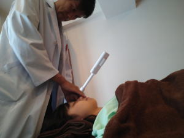
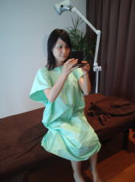
▶お問い合わせ
【治療メニューに戻る】
ハリウッド式小顔リフトアップ
1回 ￥45,000（税抜）
【小顔リフトアップがお勧めの方】
・入社式、卒業式、結婚式、お見合い、合コン前に
・顔を小さくしたい
・顔が丸顔である
・顔がむくみやすい
・目が疲れ、眼精疲労
・視界をスッキリさせたい
・最近、まぶたが垂れてきた
・目の下のたるみがある
・顔のたるみがある
・顔のリンパを流したい方
【体験されてた患者様の声】
①顔が半分になった～。
②目が大きくなった～。
③目の下のクマが消えた。
④肌のツヤがよくなった。
⑤シミが無くなった。
⑥目がぼやけて見えていたのが改善した。
⑦ウエストが細くなった。
⑧脚が細くなった。
⑨首が長くなった。
⑩お出かけする前に受けたい。
小顔リフトアップは年齢性別を問わず結果がでますので、是非1度お試し下さい。
TEL:03-6413-7803
▶お問い合わせ
【治療メニューに戻る】
- いくつになっても「綺麗だね」「カッコイイね」と言われたくありませんか？美容学校で美容の講義をしている院長の 施術を受けることにより、10歳若返ります。
また、定期的な施術を受けることにより5年後、10年後が驚くほど若く見られます。どんな高い美容液やエステより結果が出ます。
痛くなく気持ちよい施術が受けられます。
顔が丸顔である方、いつも顔が浮腫んでいる方、目が垂れてきた方、二重がスッキリしなくなってきた方、涙袋が気になる方などはオススメになります。
お顔の浮腫みを取り除きお顔の筋肉を鍛える施術になるため、お顔が浮腫がなくなり小顔の状態を維持することができるようになります。
たった一度の施術で見違えるくらいにお顔の浮腫みがなくなるため、顔が半分になってしまったと喜ばれる方がいるほどです。
顔鍼、小顔矯正とセットで行うとセット割引もご利用になれます。
美容外科で働いている看護婦さんも美容外科の機械よりこちらの方がよいとわざわざお金を払って通うほどです。
【小顔リフトアップがお勧めの方】
・入社式、卒業式、結婚式、お見合い、合コン前に
・顔を小さくしたい
・顔が丸顔である
・顔がむくみやすい
・目が疲れ、眼精疲労
・視界をスッキリさせたい
・最近、まぶたが垂れてきた
・目の下のたるみがある
・顔のたるみがある
・顔のリンパを流したい方
【体験されてた患者様の声】
①顔が半分になった～。
②目が大きくなった～。
③目の下のクマが消えた。
④肌のツヤがよくなった。
⑤シミが無くなった。
⑥目がぼやけて見えていたのが改善した。
⑦ウエストが細くなった。
⑧脚が細くなった。
⑨首が長くなった。
⑩お出かけする前に受けたい。
小顔リフトアップは年齢性別を問わず結果がでますので、是非1度お試し下さい。
TEL:03-6413-7803
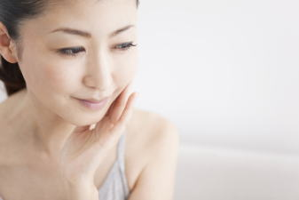
▶お問い合わせ
【治療メニューに戻る】
美脚矯正・O脚矯正
1回 ￥45,000（税抜）
【美脚矯正・O脚矯正がお勧めの方】
・O脚である
・身長を伸ばしたい
・今より脚を綺麗にしたい
・スカートを履きたい
・脚を痩せさせたい
・脚を細くしたい、足痩せしたい、太もも痩せしたい
・ふくらはぎが浮腫みやすい
・お尻の垂れを治したい
・男性でもO脚を治したい
・変形性膝関節症で痛みがある
・不妊症や冷え症がある（O脚が原因の可能性があります）
・生理痛がひどい
・ダイエットしたい
少しでも美脚矯正・O脚矯正に興味があるようでしたら、まずは電話やﾒｰﾙにて無料相談をご利用下さい。
無料相談：03-6413-7803
▶お問い合わせ
【治療メニューに戻る】
- モデルさんのような綺麗な足を手に入れたくありませんか？
日本人の80％はO脚があると言われております。モデルさんは綺麗な脚をしていますが、治療をして綺麗な脚を手に入れている方がほとんどです。
長い間悩まれていたO脚も改善いたします。脚を綺麗に細くしたいとのお悩みも改善できます。 「美脚は作れる」が当院のモットーです。どこへ行っても治らなかった方も、諦める必要はありません。痛くない治療法にて治療していきます。 個人差はありますが、およそ治療回数は12回ほどで綺麗な脚を手に入れられます。 歯医者さんで歯列矯正をしても、ある程度の時間がかかるように、美脚矯正にもある程度の時間が必要になります。
通常、O脚矯正には100万円かかるのが相場ですが当院は今現在はお安く設定しております。 値上げ検討中のためお早めにご予約下さい。
また、女性でO脚がある場合、閉経後に変形性膝関節症になる確率がかなり高くなります。
関節軟骨が破壊されていない若いうちでないとなかなか元の綺麗な足には戻りにくくなりますので60歳位までにはO脚の施術をされることをオススメします。
膝が痛いと歩くこともキツくなり、旅行にもどこにも行けなくなっていまいます。
変形膝関節症がひどくなって人工関節手術をするとおよそ200万円程の費用がかかっていましますし、手術をしたからといって元の状態に戻る保証はありません。
この施術をすることのより、脚が細くなる、O脚が治る、姿勢が伸びるなど多くのメリットがあります。
O脚矯正をしていると、下肢の冷えも改善され子宮への血液供給が多くなるため施術期間中に妊娠してしまう方が多くいます。O脚がある方は不妊症のプランに含めて施術することもおススメしております。
O脚矯正は回数券でお買いいただくとお安くなります。
【美脚矯正・O脚矯正がお勧めの方】
・O脚である
・身長を伸ばしたい
・今より脚を綺麗にしたい
・スカートを履きたい
・脚を痩せさせたい
・脚を細くしたい、足痩せしたい、太もも痩せしたい
・ふくらはぎが浮腫みやすい
・お尻の垂れを治したい
・男性でもO脚を治したい
・変形性膝関節症で痛みがある
・不妊症や冷え症がある（O脚が原因の可能性があります）
・生理痛がひどい
・ダイエットしたい
少しでも美脚矯正・O脚矯正に興味があるようでしたら、まずは電話やﾒｰﾙにて無料相談をご利用下さい。
無料相談：03-6413-7803
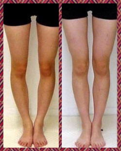
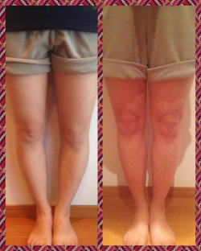
▶お問い合わせ
【治療メニューに戻る】
骨盤矯正・姿勢矯正・猫背矯正
1回 ￥45,000（税抜）
【姿勢矯正・猫背矯正・骨盤矯正がお勧めの方】
・慢性の首肩こりを治したい
・頭痛持ちを治したい
・慢性腰痛を治したい（どこに治療に行っても治らない方はお試し下さい。）
・身長を伸ばしたい（姿勢が悪い方だと最高で4ｃｍ身長が伸びております。）
・バストアップしたい
・スボーツの成績を上げたい
・痩せやすい身体を作りたい
・猫背を治したい
・首のしわを消したい
・二重あごを直したい
・スタイルを良くしたい
・骨盤のズレを治したい
・靴の底の外側や内側がすり減る
・姿勢を良くしたい
（姿勢矯正をすることにより肩こりは慢性病ではなくなり全く肩こりを感じない身体になれます。肩こりの方には骨盤矯正を勧めております。）
骨盤矯正・姿勢矯正・猫背矯正に興味があるのようでしたら、まずは電話やﾒｰﾙにて無料相談をご利用下さい。
▶姿勢の重要性を知りたい方はこちらの動画をご覧下さい。
無料相談：03-6413-7803
▶お問い合わせ
【治療メニューに戻る】
- 姿勢が悪いと綺麗に見えません。
芸能人などはオーラがあると表現しますが、オーラがあるとは姿勢が綺麗で堂々としているからなのです。姿勢が汚いだけで、老けて見えますし、自信がなさそうに見えます。 人は見た目で９割決まります。第1印象を変えるのには相当な時間がかかります。 つまり、姿勢が綺麗なだけで、品がある。
仕事が出来ると思われます。 姿勢を綺麗にするだけで、あなたの人生が変わります。 姿勢を綺麗にして、全身のバランスを整え、いつまでも美しく今後の人生を楽しみましょう。 また、肩こりや慢性腰痛がある方は姿勢矯正をお試し下さい。
姿勢矯正を行うことによりより肩こりや慢性腰痛などをお持ちの患者様の
9割の方はその後全く症状が出なくなります。
つまり、肩こり腰痛を感じなくなるということです。
一生、マッサージや整体、鍼灸に通う必要がなくなるのです。
肩こり、腰痛は根本を改善することにより全く感じなくなります。
また、骨格にズレが無い状態だと100歳まで痛みを感じない生活がおくれると言われています。
首肩こり、首のヘルニア、腰のヘルニア、腰痛、四十肩、五十肩を根本から治したい方はこちらのメニューをご選択ください。
何年もマッサージや鍼灸に通うのではなく、姿勢を今、姿勢を直してしまえば今後痛みはでなくなるでしょう。姿勢をしっかり治してしまえば今後、マッサージや鍼灸院、整体院に通う必要はなくなります。
また、O脚矯正同様に姿勢矯正も代謝が上がるため妊娠しやすい身体作りをすることもできます。
姿勢矯正は回数券でお買い求めいいただくとお安くなります。
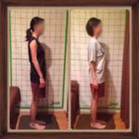
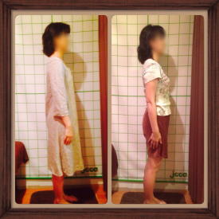
【姿勢矯正・猫背矯正・骨盤矯正がお勧めの方】
・慢性の首肩こりを治したい
・頭痛持ちを治したい
・慢性腰痛を治したい（どこに治療に行っても治らない方はお試し下さい。）
・身長を伸ばしたい（姿勢が悪い方だと最高で4ｃｍ身長が伸びております。）
・バストアップしたい
・スボーツの成績を上げたい
・痩せやすい身体を作りたい
・猫背を治したい
・首のしわを消したい
・二重あごを直したい
・スタイルを良くしたい
・骨盤のズレを治したい
・靴の底の外側や内側がすり減る
・姿勢を良くしたい
（姿勢矯正をすることにより肩こりは慢性病ではなくなり全く肩こりを感じない身体になれます。肩こりの方には骨盤矯正を勧めております。）
骨盤矯正・姿勢矯正・猫背矯正に興味があるのようでしたら、まずは電話やﾒｰﾙにて無料相談をご利用下さい。
▶姿勢の重要性を知りたい方はこちらの動画をご覧下さい。
無料相談：03-6413-7803
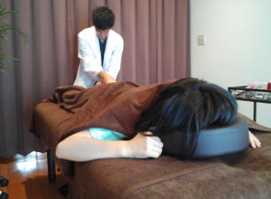
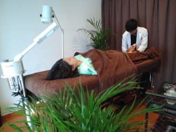
▶お問い合わせ
【治療メニューに戻る】
不妊症施術
不妊症施術 ￥45,000（税抜）
【50歳で妊娠した方の口コミ】
私は35歳で結婚して夫婦生活を2年間行っても子供を授かる事が出来ませんでした。 そのため、37歳で不妊治療の病院に通いだしました。
最初はタイミング療法、人工受精、体外受精と色々行っても全く妊娠できません。 そのため、病院が悪いのではないかと思い、都内の有名な産婦人科に何カ所か転々と移って不妊治療を行うも全く妊娠する事が出来ませんでした。
不妊治療を始めて、かれこれ13年が経ち今年で50歳になってしまいました。
もう今年でダメだったら不妊治療は止めて養子縁組を行う相談を主人としている程でした。
そこで、最後に出来る事は何かないかとネットを調べていると鍼灸が不妊症に良いという記事を見つけて、不妊症と鍼灸の関係を調べるようになり、たまたまyoutubeでこちらの鍼灸院さんの動画を見つけました。
偶然自宅からも近いのでこちらの鍼灸院に通ってみることにしました。
こちらの院長先生はお腹の冷え、胃腸の状態、ストレスが溜まっていることを脈を診ただけでわかってしまう凄い先生でした。
こちらに来るまでは内心、1週間後に体外受精があるので少しでも体の状態が良くなればという感覚で来院しましたが、ちょっと脈を診ただけでわかってしまう先生なので信頼して治療を続けることにしました。
体外受精までの期間もないので、1週間のうちに3回通いました。
徐々にお腹も温かくなり、何よりいつもより身体が軽く心配ごとも先生に話していると楽になっていくのが実感できました。
自宅でのアドバイスやお灸なども頑張ったおかげで、体外受精の11日後に妊娠検査薬を使ってみると薄く反応がでていました。
14日後の妊娠判定の日にドキドキしながら病院に聞きに行くと見事妊娠していました！ 今まで、13年間1度も妊娠できなかったのにやっと妊娠する事ができたため思わず 「妊娠しています」と言われた瞬間に涙がボロボロとこぼれだしてしまいました。 とても嬉しくて嬉しくて・・・ 辛い思いも沢山したのでやっと自分が報われた気持ちになりました。
すぐ、こちらの院長先生に電話すると自分のように喜んで頂けました。
現在は9週目に入り心拍確認もできて順調に進んでいます。 まだまだ不安定な状態なので心配ですが、今後も鍼治療をしてどうにか出産までつなげたいと思います。
最後に妊娠希望の方へ『最後まで諦めないで頑張って下さい！！』
50歳でも妊娠できるんだよと声を大きくして言いたいです。
【不妊症施術がお勧めの方】
・手足が冷たく冷え症のある方
・平熱が36度以下の方
・下腹部を触ると冷たい方（通常はお腹は温かいです。）
・病院で異常が無いのに子供が出来ない方
・体外受精や人工授精を行われている方
・流産経験がある方
・O脚がある方
・婦人科疾患を持つ方
・双角子宮がある方
・性病の既往歴がある方
・他の病院にて不妊症施術を行っている方
※上記の患者様は赤ちゃんが出来にくい傾向があります、当サロンにご相談下さい。
赤ちゃんが出来なくて不妊症でお悩みのようでしたら、まずは電話やﾒｰﾙにて無料相談をご利用下さい。▶つづきを読む
TEL:03-6413-7803
▶お問い合わせ
▶動画『１日たった３分で不妊症を解消する方法』
【治療メニューに戻る】
- はり灸を主として施術を行っていきます。 正常な夫婦生活を行っているの2年間も赤ちゃんを授からないの場合は不妊症です。 不妊症治療は2年待つ前に、1年間出来ない場合は体質改善による鍼灸施術をお勧めしております。
人工受精をしても体外受精をしてもなかなか妊娠しない方や40歳以上の年齢の方は特別不妊施術をおススメいたします。
年齢としては、40歳を超えた方でも授かることが可能です。
当院に半年通われた方の68％の方が妊娠しております。
また、当院では最高記録として50歳の方が妊娠しております！！
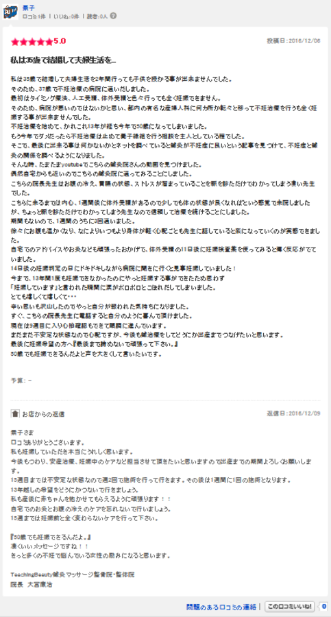
【50歳で妊娠した方の口コミ】
私は35歳で結婚して夫婦生活を2年間行っても子供を授かる事が出来ませんでした。 そのため、37歳で不妊治療の病院に通いだしました。
最初はタイミング療法、人工受精、体外受精と色々行っても全く妊娠できません。 そのため、病院が悪いのではないかと思い、都内の有名な産婦人科に何カ所か転々と移って不妊治療を行うも全く妊娠する事が出来ませんでした。
不妊治療を始めて、かれこれ13年が経ち今年で50歳になってしまいました。
もう今年でダメだったら不妊治療は止めて養子縁組を行う相談を主人としている程でした。
そこで、最後に出来る事は何かないかとネットを調べていると鍼灸が不妊症に良いという記事を見つけて、不妊症と鍼灸の関係を調べるようになり、たまたまyoutubeでこちらの鍼灸院さんの動画を見つけました。
偶然自宅からも近いのでこちらの鍼灸院に通ってみることにしました。
こちらの院長先生はお腹の冷え、胃腸の状態、ストレスが溜まっていることを脈を診ただけでわかってしまう凄い先生でした。
こちらに来るまでは内心、1週間後に体外受精があるので少しでも体の状態が良くなればという感覚で来院しましたが、ちょっと脈を診ただけでわかってしまう先生なので信頼して治療を続けることにしました。
体外受精までの期間もないので、1週間のうちに3回通いました。
徐々にお腹も温かくなり、何よりいつもより身体が軽く心配ごとも先生に話していると楽になっていくのが実感できました。
自宅でのアドバイスやお灸なども頑張ったおかげで、体外受精の11日後に妊娠検査薬を使ってみると薄く反応がでていました。
14日後の妊娠判定の日にドキドキしながら病院に聞きに行くと見事妊娠していました！ 今まで、13年間1度も妊娠できなかったのにやっと妊娠する事ができたため思わず 「妊娠しています」と言われた瞬間に涙がボロボロとこぼれだしてしまいました。 とても嬉しくて嬉しくて・・・ 辛い思いも沢山したのでやっと自分が報われた気持ちになりました。
すぐ、こちらの院長先生に電話すると自分のように喜んで頂けました。
現在は9週目に入り心拍確認もできて順調に進んでいます。 まだまだ不安定な状態なので心配ですが、今後も鍼治療をしてどうにか出産までつなげたいと思います。
最後に妊娠希望の方へ『最後まで諦めないで頑張って下さい！！』
50歳でも妊娠できるんだよと声を大きくして言いたいです。
【不妊症施術がお勧めの方】
・手足が冷たく冷え症のある方
・平熱が36度以下の方
・下腹部を触ると冷たい方（通常はお腹は温かいです。）
・病院で異常が無いのに子供が出来ない方
・体外受精や人工授精を行われている方
・流産経験がある方
・O脚がある方
・婦人科疾患を持つ方
・双角子宮がある方
・性病の既往歴がある方
・他の病院にて不妊症施術を行っている方
※上記の患者様は赤ちゃんが出来にくい傾向があります、当サロンにご相談下さい。
赤ちゃんが出来なくて不妊症でお悩みのようでしたら、まずは電話やﾒｰﾙにて無料相談をご利用下さい。▶つづきを読む
TEL:03-6413-7803
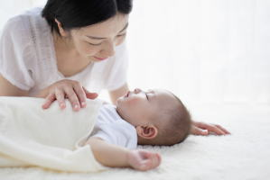
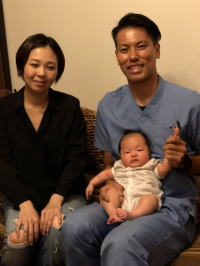
▶お問い合わせ
▶動画『１日たった３分で不妊症を解消する方法』
【治療メニューに戻る】
男性不妊症[乏精子症、無精子症、ED治療（勃起不全）]
1回 ￥45,000（税抜）
【当院で施術可能な男性不妊症】
【乏精子症】
精子の数、運動率、奇形率がWHOの基準値に満たない男性不妊症を乏精子症といいます。軽度の乏精子症場合、鍼灸治療で劇的に改善される方が多くおられます。
週に1回の治療を10週継続していただければ、かなりの確率で結果を残せるのではないかと考えております。精子の数は適切な鍼灸治療をする事により増やすことが可能です。
【無精子症】
当院での治療可能な無精子症は精巣前性無精子症（二次性精巣機能障害）と精巣性無精子症（原発性精巣機能障害）です。精巣前性無精子症（二次性精巣機能障害）は、内分泌（ホルモン）の異常が精巣の精子を作る働きの障害となっているので、
鍼灸治療により、内分泌の正常化に向けた治療を施します。精巣性無精子症（原発性精巣機能障害）は精巣での精子を作る働き自体に問題がありますので、病院での受診結果をもとに、鍼灸の適応については総合的に判断する必要があります。
※閉塞性無精子症は精管でのつまりが原因となるため治療対象外となります。
【ED治療（勃起不全）】
男性なら誰でもかかる可能性のあるごく普通の病気です。国内だけでもED（勃起不全）で悩む男性の数は1000万人とも言われています。挿入可能な硬さにならない、勃起しても維持できない、以前途中で断念した事が不安、自信が無い。などED症状は様々です。 原因は大きく分けて、心因性と器質性の２つになります。 最近では、若い世代のED患者様も増加傾向にあります。 当院では、PDE5阻害薬（バイアグラ、レビトラ、シリアス）を利用しても思うように性生活に満足が得られない方などが通院しております。
鍼灸治療により心と体のバランスや自律神経を調整し、ED改善を目指します。
男性不妊症でお悩みのようでしたら、まずは電話やﾒｰﾙにて無料相談をご利用下さい。
TEL:03-6413-7803
▶お問い合わせ
【治療メニューに戻る】
- 生活習慣改善もしている、禁煙もしている、亜鉛も飲んでいるのになかなか子供が出来ないなど悩まれている方は鍼灸施術がお勧めです。
男性不妊症の原因は、 乏精子症、無精子症、性欲減退、ED（勃起不全）、
逆行性射精などの射精不全です。 - 全国的にも男性不妊を取り扱っている鍼灸院はごくわずかです。また、大学病院で男性不妊症を行っているところも数カ所ほど。最先端研究でも原因がはっきりとしていないことも多いのですが、鍼灸施術により体質を変えることが妊娠への一番の近道になると思います。
【当院で施術可能な男性不妊症】
【乏精子症】
精子の数、運動率、奇形率がWHOの基準値に満たない男性不妊症を乏精子症といいます。軽度の乏精子症場合、鍼灸治療で劇的に改善される方が多くおられます。
週に1回の治療を10週継続していただければ、かなりの確率で結果を残せるのではないかと考えております。精子の数は適切な鍼灸治療をする事により増やすことが可能です。
【無精子症】
当院での治療可能な無精子症は精巣前性無精子症（二次性精巣機能障害）と精巣性無精子症（原発性精巣機能障害）です。精巣前性無精子症（二次性精巣機能障害）は、内分泌（ホルモン）の異常が精巣の精子を作る働きの障害となっているので、
鍼灸治療により、内分泌の正常化に向けた治療を施します。精巣性無精子症（原発性精巣機能障害）は精巣での精子を作る働き自体に問題がありますので、病院での受診結果をもとに、鍼灸の適応については総合的に判断する必要があります。
※閉塞性無精子症は精管でのつまりが原因となるため治療対象外となります。
【ED治療（勃起不全）】
男性なら誰でもかかる可能性のあるごく普通の病気です。国内だけでもED（勃起不全）で悩む男性の数は1000万人とも言われています。挿入可能な硬さにならない、勃起しても維持できない、以前途中で断念した事が不安、自信が無い。などED症状は様々です。 原因は大きく分けて、心因性と器質性の２つになります。 最近では、若い世代のED患者様も増加傾向にあります。 当院では、PDE5阻害薬（バイアグラ、レビトラ、シリアス）を利用しても思うように性生活に満足が得られない方などが通院しております。
鍼灸治療により心と体のバランスや自律神経を調整し、ED改善を目指します。
男性不妊症でお悩みのようでしたら、まずは電話やﾒｰﾙにて無料相談をご利用下さい。
TEL:03-6413-7803
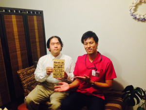
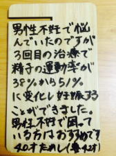
▶お問い合わせ
【治療メニューに戻る】
逆子・つわり・前置胎盤
- 【逆子治療】1回 ￥45,000（税抜）
基本的に28～29週を過ぎても正常位にいない場合、逆子と診断されます。 逆子とわかり次第当院へお越し下さい。 熱くなく気持ち良いお灸と優しいマッサージにて、逆子を改善します。 当院の得意分野になります。
原因は母体の冷えや疲労による臍帯血流の低下、子宮の張りなどによる赤ちゃんの胎動頻度の低下などです。 帝王切開をするとキズができます。東洋医学では、オペのキズは色々な臓器や筋肉に問題を起こすようになります。
例えば、オペのキズが原因で肩が挙がらなくなったり、ぎっくり腰になったり、内科疾患になったりと様々な病気の原因となります。
そのため自然妊娠で赤ちゃんを産むことが大切です。
逆子になってしまいお悩みのようでしたら、まずは電話やﾒｰﾙにて無料相談をご利用下さい。
▶つづきを読む
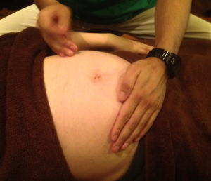
▶お問い合わせ
- 【つわり治療】1回 ￥45,000（税抜）
初回の治療後から吐き気が無くなり、食事を美味しく食べられるようになったり、相談の多い「よだれ」が減ったり、気分が良くなったりと劇的な効果を挙げることもしばしばあります。 つわりのみならず、妊娠中に治療を行うことは、今ある症状を改善するだけではなく、出産に向けた身体の調節や、お腹の中にいる赤ちゃんの治療ができます。お母さんの状態を良くするという事は、赤ちゃんにもよい影響を与え、病気にかかりにくい元気な子供が生まれてきます。 治療間隔は症状が激しければ週２回以上行います。
さほどひどくなければ週に１回です。回復してくればもっと間隔を空けていきます。
つわり症状でお悩みのようでしたら、まずは電話やﾒｰﾙにて無料相談をご利用下さい。
▶お問い合わせ
- 【前置胎盤治療】 1回 ￥45,000（税抜）
当院では、前置胎盤を改善する独自で開発した鍼灸治療と温熱治療により改善していきます。前置胎盤と診断された段階から当院で治療を始める事によって改善されてきます。 また、早期の治療開始が重要です。
多くの患者様がが前置胎盤を治して当院を卒業されていきます。
全国的にも前置胎盤の治療を行っている治療院は少ないため新幹線で通院されている患者様もいる程です。
▶つづきを読む
TEL:03-6413-7803
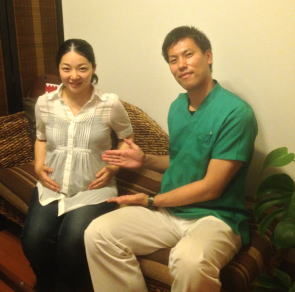
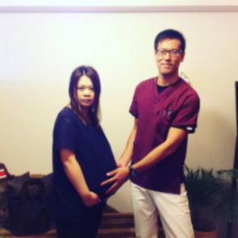
▶お問い合わせ
【治療メニューに戻る】
産前・産後の骨盤矯正
1回 ￥45,000（税抜）
【産前骨盤矯正がお勧めの方】
・痛くなく出産したい
・お尻を大きくしたくない
・出産で骨盤をズレさせたくない
・腰が痛い
・股関節が痛い
・恥骨が痛い
・脚が冷え症である（脚が冷えていると難産になりやすくなります。）
少しでも産前・産後骨盤矯正に興味があるのようでしたら、まずは電話やﾒｰﾙにて無料相談をご利用下さい。
TEL：03-6413-7803
▶お問い合わせ
【治療メニューに戻る】
- 【産前骨盤矯正】
妊娠すると骨盤が開きだします。そのため適切に骨盤が開くように促す事により出産が痛くなく安産になります。 子供は産みたいけど、痛いのは嫌だと言う方はお勧めです。 また、産前から腰痛がある方は、妊娠時に唯一骨盤が動く時期になりますので、しっかりと骨盤を矯正すれば、産後に腰痛の痛みから今後ずっと解放されます。
※安定期～出産日までの治療となります。
【産前骨盤矯正がお勧めの方】
・痛くなく出産したい
・お尻を大きくしたくない
・出産で骨盤をズレさせたくない
・腰が痛い
・股関節が痛い
・恥骨が痛い
・脚が冷え症である（脚が冷えていると難産になりやすくなります。）
- 【産後骨盤矯正】
妊娠し、病院から退院したらすぐに骨盤矯正が必要になります。
産後骨盤矯正をしないと、骨格がズレて今後腰痛や肩こりなど色々な部分に痛みが出やすい身体になってしまいます。 産後4回の治療が必要です。
妊娠は命がけ仕事なので、お母さんも身体を労わるメンテナンスが必要です。今後長い人生、このタイミングに適切なケアをしましょう。 産前から腰痛があった方は骨盤が閉まるこの機会に適切な治療をすることにより、痛みから解放されます。
※産後3週間～6ヶ月以内にお越し下さい。産後の期間が短ければ短いだけ理想です。帝王切開の患者様は5週間以降から施術可能です。
少しでも産前・産後骨盤矯正に興味があるのようでしたら、まずは電話やﾒｰﾙにて無料相談をご利用下さい。
TEL：03-6413-7803
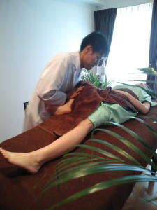
▶お問い合わせ
【治療メニューに戻る】
推拿療法（マッサージ・按摩・指圧）
[３０分／６０分／９０分]￥45,000（税抜）／￥90,000（税抜）／￥135,000（税抜）
- 推拿療法は中国伝統の手技で中国の医学部を卒業しないとできない手技になります。日本でいうところの、マッサージ、按摩、指圧、ストレッチの複合手技のような感覚です。
そのため、患者様の状態に合わせた骨格の歪み調整から癒しのマッサージまで幅広い範囲のお悩みに応える事ができます。
また、当院での手技はすべてオーダーメイドの施術を行います。
毎回、患者様の症状に応じて施術内容を変えて行きます。
当院はリラクゼーションを目的とした慰安のマッサージは行っておりません。
痛みのある部位の原因を特定し施術していきます。
そのため、術後の結果が他のマッサージ店とは大きく異なります。
健康のため、美しくなるため、骨を調節し、筋肉をほぐし、リンパの流れを良くし、血流を良くし、体の内から老廃物や毒素を出して、綺麗にそして健康にしていく推拿療法マッサージ療法です。
また、推拿療法士、美容マッサージ師教員、マッサージ師教員、按摩師教員、指圧師教員による施術です。
ぜひ、一度、体験してみて下さい。
・疲れきっていて癒しのマッサージを受けたい
・マッサージを受けながら寝たい
・骨格の歪みに対するマッサージを受けたい
・究極の癒しを受けたい
・内から美しくなりたい
・マッサージが好き
・どこのマッサージ院に行ってもすぐ元に戻る
・鍼も整体も恐い
少しでも美容マッサージに興味があるのようでしたら、まずは電話やﾒｰﾙにて無料相談をご利用下さい。
TEL:03-6413-7803
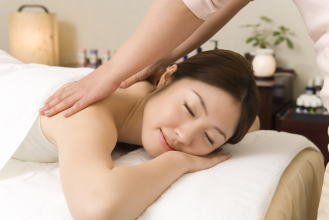
▶お問い合わせ
【治療メニューに戻る】
眼科疾患施術
1回 ￥45,000（税別）- 眼の疾患に対応している治療院は全国を探しても眼科医院以外にほとんど存在しません。しかし、目の疾患で悩まれている方は多いはずです。
当院では、鍼灸、電気療法、温熱療法、手技療法を利用して、目の周りの血行や気の流れを調整し施術していきます。
眼精疲労があると視力低下の原因になるため、目の定期的な施術は必要になります。人間は70歳までしか眼のケアをしないと使い物にならないくなると言われてます。その為、眼科に行くと高齢化率が高くなるのです。手術をする前に鍼灸で調整してみましょう。
施術は痛くないのですか？とよく聞かれますが、当院の施術は痛みがなく気持ちの良い施術のため施術中に寝てしまう方が多いです。
【適応疾患】
・緑内障（原発開放隅角、原発閉塞隅角、正常眼圧、続発性、発達）
・白内障
・黄斑変性症
・糖尿病性網膜症
・虚血性網膜症
・網膜静脈分枝閉塞症
・網膜中心静脈閉塞症
・その他、眼科疾患
少しでも眼の疾患でお困りがあるようでしたら、まずは電話やﾒｰﾙにて
無料相談をご利用下さい。
TEL:03-6413-7803
▶お問い合わせ
【治療メニューに戻る】
脱毛症、薄毛施術、育毛施術
1回 ￥45,000（税別）
▶お問い合わせ
【治療メニューに戻る】
- 脱毛症や薄毛の方は先天的要因で毛根に血液が行きにくくなってしまっております。
そのため、脱毛や薄毛になってしまうのです。
鍼灸施術で頭皮の施術を行うと毛がしっかりとして新しい毛が生えてきます。薬を飲んだり、シャンプーを変えたり、頭皮マッサージをするよりも頭皮の血行を直接的に上げることができるので薄毛で悩まれている方はぜひ一度体験してみて下さい。
薄毛を諦める前にご相談下さい。
円形脱毛症、遺伝性の薄毛、病的な薄毛など様々な薄毛に対応しております。
※完全に毛根が死んでしまって産毛もない部分からの発毛は難しくなります。あくまでも毛はあるけど薄くなった、M字型、O型などの方で手遅れになる前の施術になります。円形脱毛症などの場合は例外です。
脱毛症、薄毛施術、育毛施術に興味があるのようでしたら、まずは電話やﾒｰﾙにて無料相談をご利用下さい。
無料相談：03-6413-7803
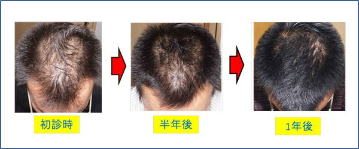
▶お問い合わせ
【治療メニューに戻る】
Ｔｅａｃｈｉｎｇ Ｂｅａｕｔｙ

〒154-0014
東京都世田谷区新町3-21-1
さくらウェルガーデン3F
TEL：
03-6413-7803
→アクセス
診療時間
通常診療
月火金土／9:00～13:00
木曜日 ／15:00～19:00
※当日予約可。
夜間診療
月火木金土／19:00～23:00
※通常価格の1.5倍料金
※当日の19時までにご予約の場合のみ
深夜・早朝診療
月火木金土／23:00～翌9:00
※通常価格の2倍料金
※当日の19時までにご予約の場合のみ
休診日
水、木（午前）、日、祭日
交通事故・労災・
各種保険取扱い